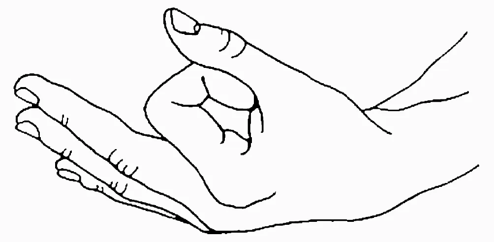
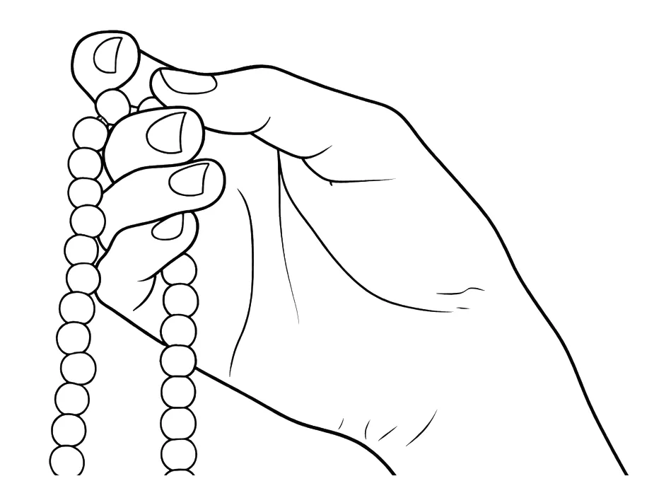

Recitation
pranava japa
.| pranava | प्रणव | AUM ॐ |
| meru | मेरु | summit |
| akṣa | अक्ष | eye (bead) |
| sūtra | सूत्र | thread |
rudaraksha mala
- 108 beads
- 1 meru

Left Hand
- executes chin mudra
- index finger makes a loop and touches base of thumb
- middle, ring, little fingers stretched
- palm up
- rests on left knee

Right Hand
- counts mala beads
- mala is on middle finger
- thumb moves beads
- hand is on right knee
- mala hangs on inner side of leg

Posture
- sit on chair
- sit facing east
- spine straight
- lean forward a bit
Eyes
- eyes closed
- eyes crossed on innerbrow / tip of nose
Tongue
- tongue on palate
Execution
- index finger does not touch bead
- thumb pulls bead toward body
- recite AUM
- recite three sounds A, U, M
- meru not to be crossed
- after reaching meru, rotate mala